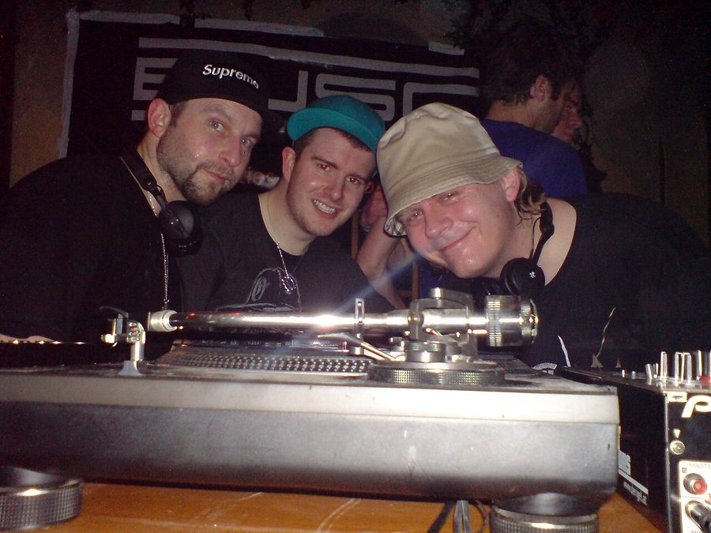

Scratch Perverts [Audio]: Turntablists with taste



STREAMING AUDIO INTERVIEW
Since forming in 1996, UK turntablist crew the Scratch Perverts have maintained a reputation as one of the most formidable and technically proficient setups to ever graced the Technics 1200s. Expanding and contracting their ranks in the early days, since settling on the core trio of Prime Cuts, Tony Vegas and Plus One as central members, the Scratch Perverts have moved far beyond the sometimes-suffocating restrictions of the turntablist battle scene to become regular fixtures in clubs and on festival stages worldwide.
Although their technical skills are second the none, it’s arguably their ability to walk the line between rocking the crowd and showing off that has them remain such a revered act across the globe. After some time away from Australian stages, they’re finally heading back this month for the Parklife national tour. ITM’s Angus Paterson recently caught up with Tony Vegas to chew the fat.
The Scratch Perverts play Parklife nationally this September and October:
Sat 22nd Sep – Melbourne
Sun 23rd Sep – Adelaide
Sat 29th Sep – Brisbane
Sun 30th Sep – Sydney
Mon 1st Oct – Perth
Feast your eyes on the technical wizardry that is the Scratch Perverts, doing their thing at Time Bangor in Wales earlier this year: